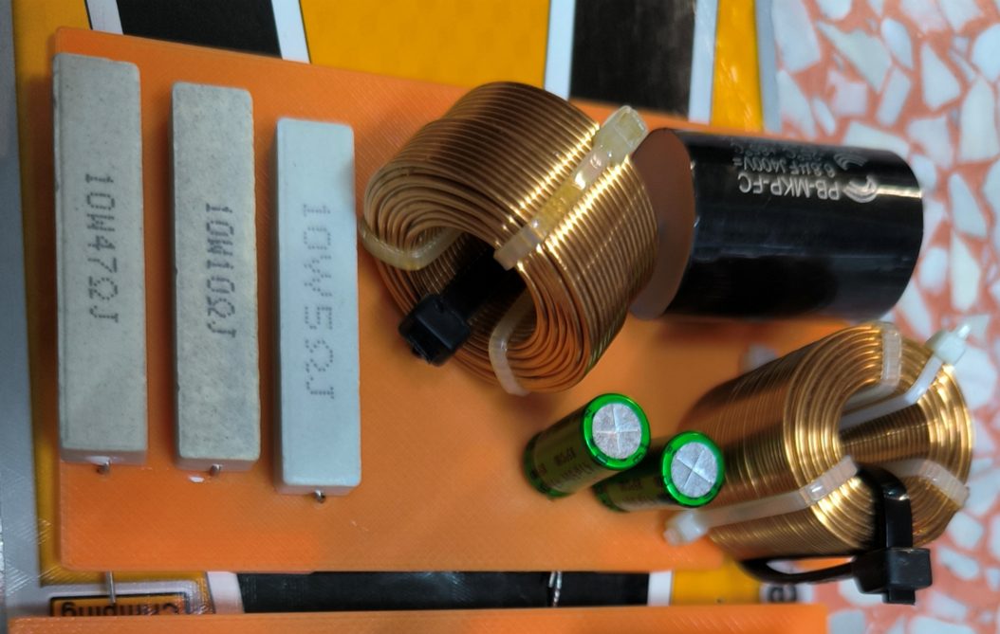
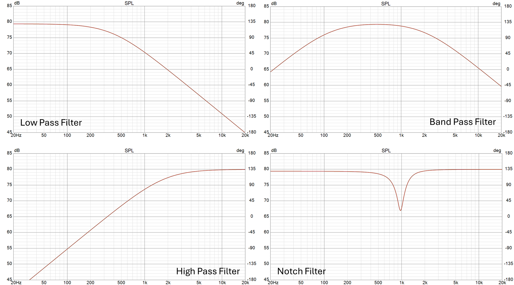
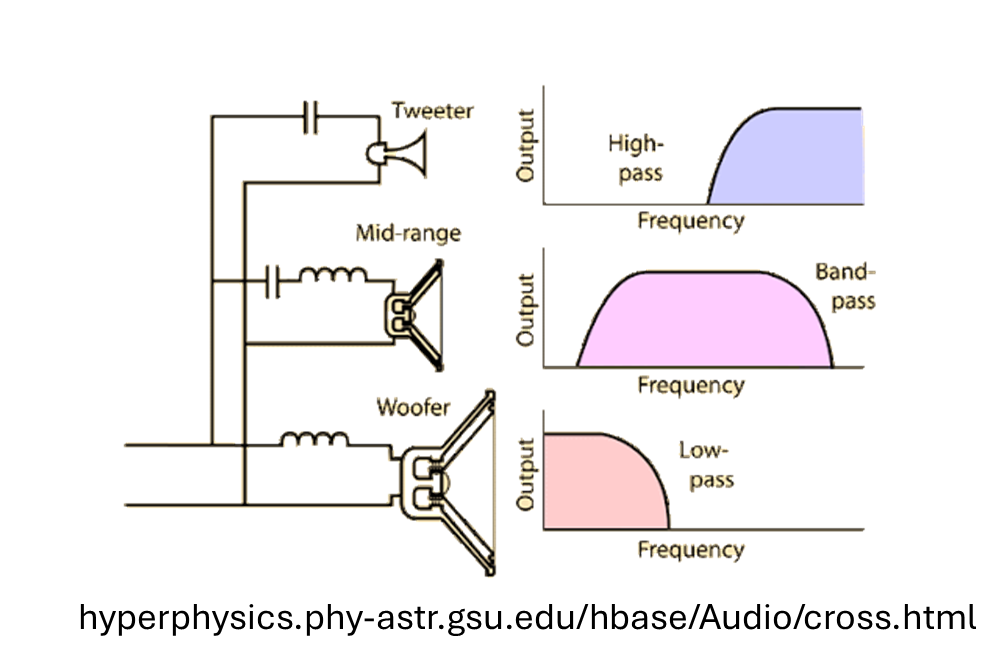
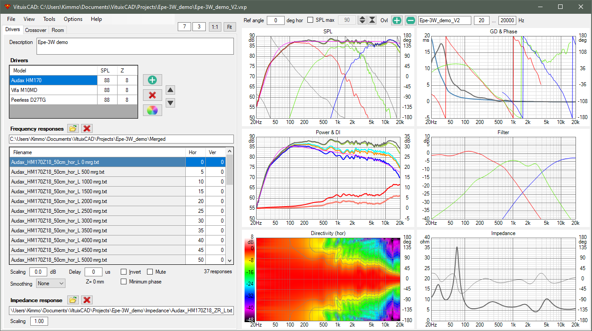
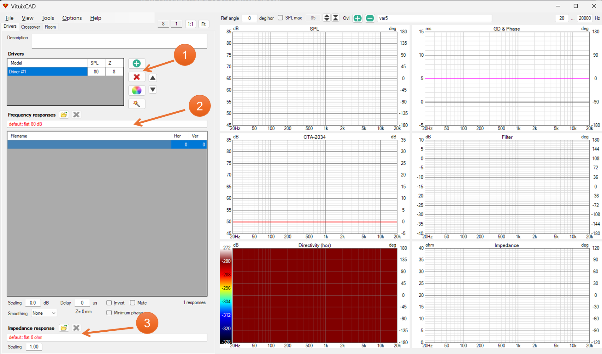
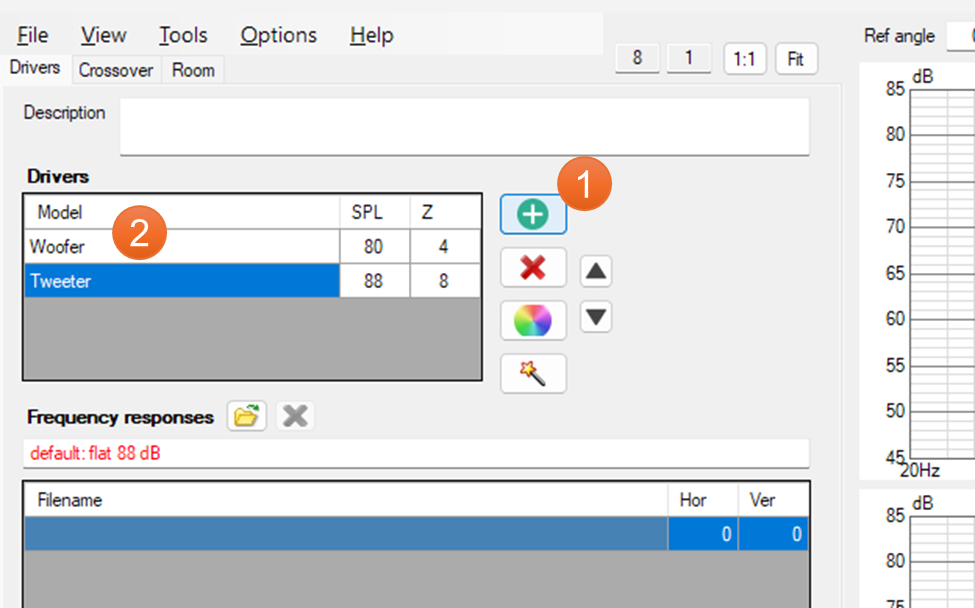
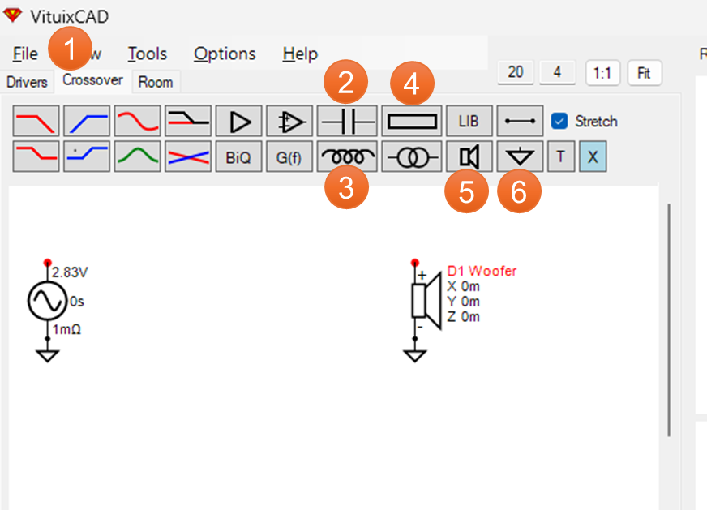
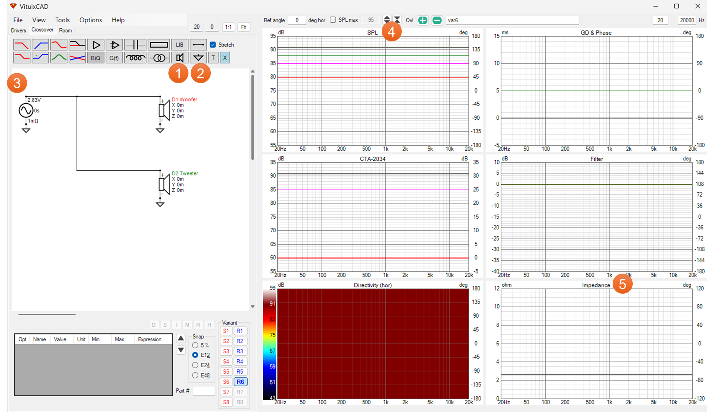
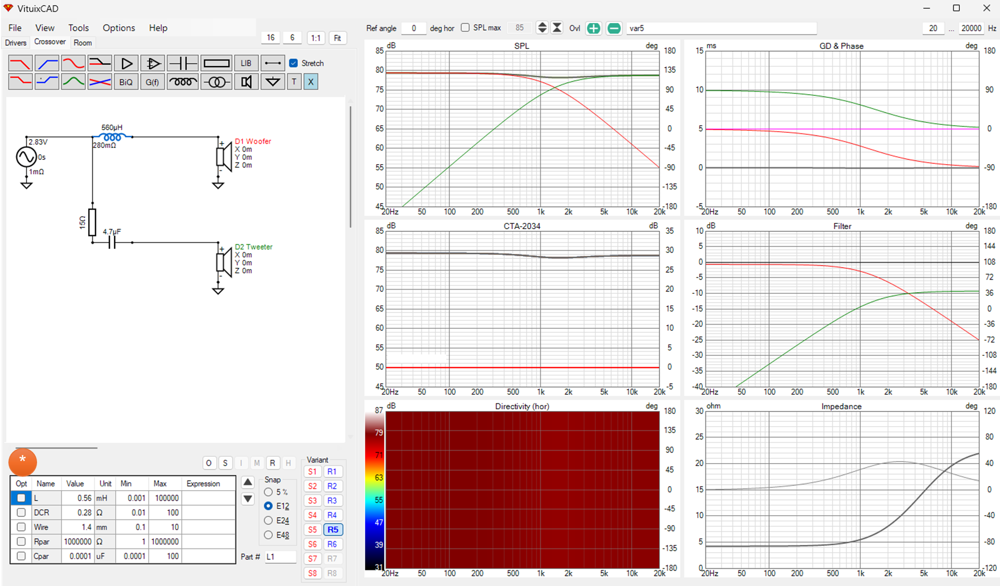

Passive Crossover Network with VituixCAD #1
เอาหละมาเขียนบทความว่าด้วยเรื่องของวงจรครอสโอเวอร์ดูซักตั้งดีกว่า (เอาจริง ๆ จะเขียนเสร็จในสัปดาห์นี้ไหมนะ - -” ) ถ้าชอบบทความแบบนี้ก็อย่าลืมกด like หรือคอมเม้นต์นะครับ คนจะได้เห็นกันเยอะ ๆ และ ไม่จม post ของท่านอื่น ๆ ไปอย่างรวดเร็ว : D
คิดว่าจะแบ่งออกเป็นตอนต่าง ๆ ดังนี้นะ
- วงจรครอสโอเวอร์คืออะไร และ แนะนำ VituixCAD
- ฟิลเตอร์พื้นฐาน
- วงจรครอสโอเวอร์และเฟส
- วงจรครอสโอเวอร์และอิมพีแดนซ์
- เรื่องอื่น ๆ เกี่ยวกับวงจรครอสโอเวอร์
ใครมีข้อเสนอแนะหรือมีข้อสงสัยตรงไหนก็สามารถทิ้งไว้คอมเม้นต์ได้ และถ้าเห็นว่าข้อมูลของผมผิดพลาดก็สามารถเสนอแนะกันได้นะครับ
บทความอื่น ๆ https://docs.google.com/spreadsheets/d/1rxUrbgZ-fHgAC0ry7jyNlXNsLzxi6G1SH0ofxL6onEk/
- ผมเริ่มเล่าพื้นฐานสำหรับคนที่ยังไม่รู้จักวงจรครอสโอเวอร์ก่อนก็แล้วกัน วงจรครอสโอเวอร์ จริง ๆ ก็มีเรียกชื่อเรียกหลายชื่ออยู่เหมือนกัน เช่น
- วงจรครอสโอเวอร์
- วงจรตัดแบ่งความถี่
- เน็ตเวอร์ค
- Crossover Network
- X-over ในบทความผมเพื่อความเป็นทางการหน่อยจะใช้คำว่าวงจรครอสโอเวอร์ละกันครับ
วงจรครอสโอเวอร์จะแบ่งออกเป็น 2 ประเภท คือ Active และ Passive ต่างกันที่ active crossover จะอยู่ก่อนเข้า Power Amp ส่วน Passive crossover จะอยู่หลังจากออกจาก Power Amp แล้ว ซึ่งเอาจริง ๆ แล้วถ้าสามารถทำ Active crossover ได้จะช่วยลดต้นทุนไปได้มาก ๆ แต่ก็อาจจะต้องทำวงจรที่ยุ่งยากขึ้นอีกหน่อย ส่วนในบทความนี้ผมจะพูดถึง Passive crossover เท่านั้น

- การทำงานของวงจรครอสโอเวอร์ จริง ๆ แล้วการทำงานของวงจรครอสโอเวอร์ ก็คือการประกอบกันของวงจรกรองความถี่ ซึ่งถ้าแบ่งเป็นประเภทพื้นฐานออกเป็น 2 ประเภท
- วงจรกรองความถี่ต่ำผ่าน หรือ Low pass filter
- วงจรกรองความถี่สูงผ่าน หรือ High pass filter
ส่วนวงจรกรองความถี่อื่น ๆ ก็จะมีพื้นฐานมาจาก 2 ตัวนี้นั่นแหละ เช่น เอาวงจรทั้งสองมาต่ออนุกรมกัน เราก็จะได้ วงจรกรองความถี่เลือกผ่าน Band pass filter หรือถ้าเอาทั้งสองมาต่อขนานกัน ก็จะออกมาเป็น วงจรลดทอนสัญญาณช่วงความถี่ Notch filter

- ทำไมถึงต้องใช้วงจรครอสโอเวอร์
-
ช่วยป้องกันความเสียหายของดอกแหลมหรือทวิตเตอร์ อย่างที่รู้กันว่าถ้าปล่อยให้ดอกทวิตเตอร์เล่นเสียงต่ำ สิ่งที่ได้ตามมาคือทวิตเตอร์จะไหม้อย่างแน่นนอน
-
ช่วยให้ดอกลำโพงแต่ละดอกทำงานได้เต็มประสิทธิภาพ หรือ กล่าวอีกอย่างคือดอกลำโพงแต่ละดอกทำงานอยู่ในช่วงที่มีความเพี้ยนน้อยที่สุด (THD ต่ำที่สุด)
-
ช่วยให้ดอกลำโพงแต่ละดอกมีความดังระดับเดียวกัน ส่วนใหญ่แล้วลำโพงวูฟเฟอร์และทวิตเตอร์จะมีระดับความดัง (SPL) ไม่เท่ากัน ซึ่งต้องแก้ด้วยการใส่วงจร Attenuation หรือวงจรลดแรงดันลงไปในครอสโอเวอร์
-
เมื่อรวม ๆ กันแล้ววงจรครอสโอเวอร์จะทำให้การตอบสนองความถี่โดยรวมได้สมดุลตลอดทุกย่านเสียงที่มนุษย์ได้ยิน หรือ ทำให้การตอบสนองความถี่เป็นไปตามที่นักออกแบบต้องการ ถ้าจะให้เห็นภาพผมขอยกตัวอย่างลำโพงมอร์นิเตอร์ Genelec 8341A SAM ที่ออกแบบการตอบสนองความถี่ตั้งแต่ 40 - 20k Hz ออกมาให้เรียบเป็นไม้บรรทัด (แต่แน่นอนว่าเขาใช้ DSP ด้วยนะ) https://www.audiosciencereview.com/forum/index.php?threads/genelec-8341a-sam™-studio-monitor-review.11652/

- โปรแกรมที่ใช้ในการออกแบบวงจรครอสโอเวอร์ แน่นอนว่าก็จะมีโปรแกรมคลาสสิกอย่าง XSim หรือโปรแกรมสุด Advance อย่าง LTSpice ที่สามารถใช้ออกแบบวงจรครอสโอเวอร์ได้ แต่ผมจะแนะนำให้ใช้ VituixCAD ซึ่งจะมีความสามารถเฉพาะทางในการออกแบบวงจรมากกว่า ใครยังไม่มีก็สามารถ download และติดตั้งได้จาก link ด้านล่างนี้เลย https://kimmosaunisto.net/
สำหรับบทความนี้ผมแนะนำให้ติดตั้งโปรแกรมนี้ไว้ได้เลย จะได้ลองทำตามตัวอย่างกันไปครับ

- เริ่มใช้โปรแกรม
เนื่องจากโปรแกรมนี้มีส่วนประกอบเยอะ ดังนั้นผมจะขออธิบายเป็นส่วน ๆ ไปครับ
- ใช้เพิ่มลดดอกลำโพง
- ใส่การตอบสนองความถี่ (Frequency Response)
- ใส่อิมพีแดนซ์
แน่นอนว่าส่วนที่ 2 และ 3 นั้นเป็นส่วนสำคัญมากสำหรับการออกแบบวงจรครอสโอเวอร์ แต่ในตอนนี้ผมจะขอข้ามส่วนนี้ไปก่อน

- เพิ่ม driver และ ปรับค่า default
- อันดับแรกนี้ผมอยากให้ทุกคนลองกดที่ปุ่ม + (หมายเลข 1) โปรแกรมมันจะถามว่าต้องการเพิ่มดอกลำโพงไหม ให้เราตอบตกลงไป
- ต่อมาผมอย่างให้ลองดับเบิ้ลคลิกที่ช่องในตารางหมายเลข 2 มันจะให้เราแก้ค่าได้
- ลองเปลี่ยน Driver #1 เป็น Woofer และ Driver #2 เป็น Tweeter ดูครับ
- คอลัมน์ SPL (dB) และ Z (Ohm) คือค่าเริ่มต้นของความดังและอิมพีแดนซ์ของดอกลำโพง ในกรณีที่ยังไม่มีไฟล์จริง ซึ่งในขั้นตอนนี้ผมอยากให้ทุกคนลองเซต Z ของ Woofer เป็น 4 และค่า SPL ของ Tweeter เป็น 88 ดูก่อนครับ

- Tab Crossover กดไปที่ tab crossover (หมายเลข 1) จะเห็นหน้าจอด้านซ้ายที่เปลี่ยนไป มี toolbox ให้เราเพิ่ม component ต่าง ๆ เช่น filter, amplifier แต่ผมจะอธิบายเฉพาะปุ่มเบื่องต้น 5 ปุ่มนี้ก่อน
หมายเลข 2 เพิ่ม ตัวต้านทาน Capacitor หมายเลข 3 เพิ่ม ลวดตัวนำ Inductor หมายเลข 4 เพิ่ม ตัวต้านทาน Resistor หมายเลข 5 เพิ่ม ดอกลำโพง Driver หมายเลข 6 เพิ่ม กราว Ground (GND)

- เพิ่มลำโพงเข้ามาในวงจร ให้กดไปที่ปุ่มลำโพง (หมายเลข 1) จะเห็นว่าลำโพงจะติดเมาส์ออกมา ให้กดคลิกซ้ายเพื่อวางดอกลำโพงลงในวงจร
จากนั้นกดที่ปุ่มกราว (หมายเลข 2) แล้ววางต่อจากลำโพงข้างขั้วลบ
จากนั้นกดไปที่จุดสีแดงฝั่งขั้ว + ของ Woofer จะเห็นว่ามีเส้นตรงติดเมาส์ออกมา ให้เราคลิกซ้ายที่จุดสีแดงที่ Signal generator (หมายเลข 3) เมื่อต่อสำเร็จเราจะเห็นกราฟขึ้นมาที่กราฟ SPL (4) และ Impedance (5)
ต่อไปลองต่อลำโพง Tweeter เข้ากับ Signal generator ดูครับ เวลาต่อเราจะต่อจะเห็นว่าโปรแกรมนี้ยังไม่สามารถต่อจุดกับเส้นได้ เรายังต้องต่อไปที่จุดแดงที่ generator อยู่
ถ้าทำสำเร็จจะเห็นว่ากราฟ SPL (4) จะมีเส้นมากขึ้น ถ้าเอาเมาส์ไปวางบนเส้นโปรแกรมจะบอกว่าเส้นไหนมาจากลำโพงไหน และเส้นไหนเป็นเส้นรวม ส่วนกราฟ Impedance (5) จะเห็นว่ามันลดลงไป (4 โอม ขนานกับ 8 โอม)

- ทดลอง คราวนี้ลองเพิ่มวงจรตามผมดูครับ
-
กดคลิกขวา เพื่อหมุน component ก่อนที่จะวางลงวงจร กดที่ตัวต้านทาน ลากเมาส์เข้ามาในวงจรแล้วคลิกขวาเพิ่มหมุน จากนั้นคลิกซ้ายเพื่อวาง
-
ใช้ scroll wheel ของเมาส์เพื่อเปลี่ยนค่า กดที่ component ให้เปลี่ยนสีเป็นสีน้ำเงินก่อน จากนั้นหมุน scroll wheel ขึ้นลงเพื่อเปลี่ยน ค่า
-
วิธีเปลี่ยนค่าอีกวิธีนึงคือเปลี่ยนที่ตารางด้านซ้ายล่าง (*) ตรง ๆ ก็ได้
ตอนนี้ผมก็ขอจบไว้เพียงเท่านี้ก่อนครับ จุดประสงค์ของตอนนี้ผมอยากให้ทุกคนคุ้นเคยกับหน้าจอของ VituixCAD ระดับนึงก่อน ในตอนต่อไปผมคงไม่ลงส่วนที่ basic มาก ๆ อย่างปุ่ม LCR และการปรับค่าแล้วนะ ในตอนนี้ใครมีคำถามหรือติดตรงไหนก็สามารถคอมเม้นต์ถามได้เลยครับ
